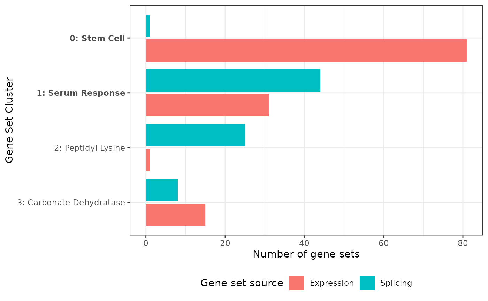
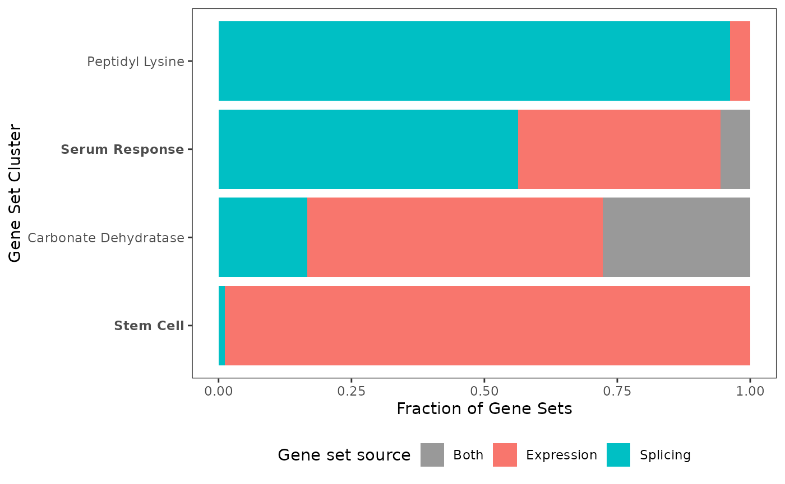
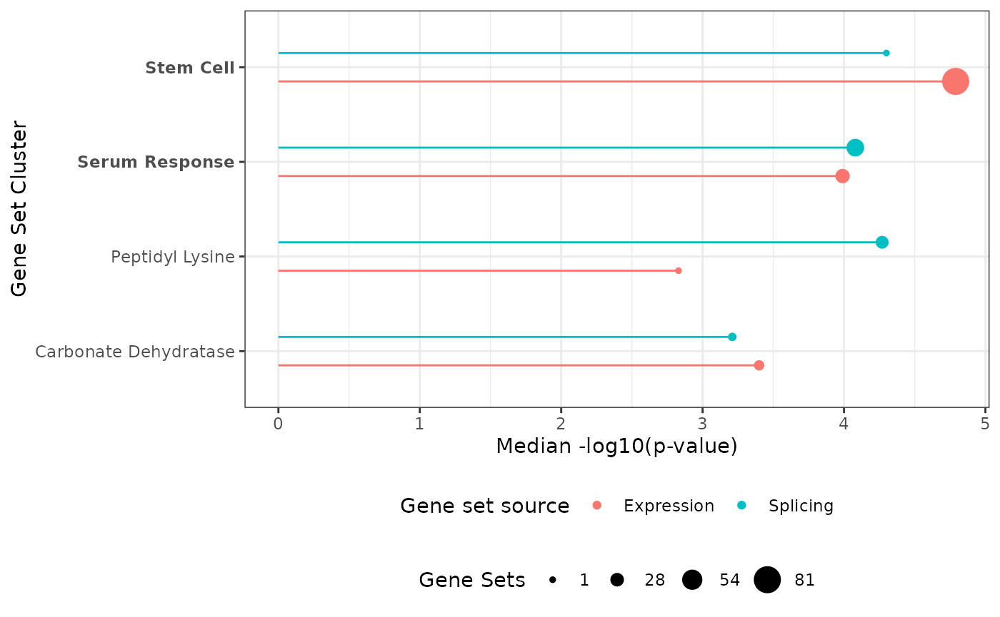
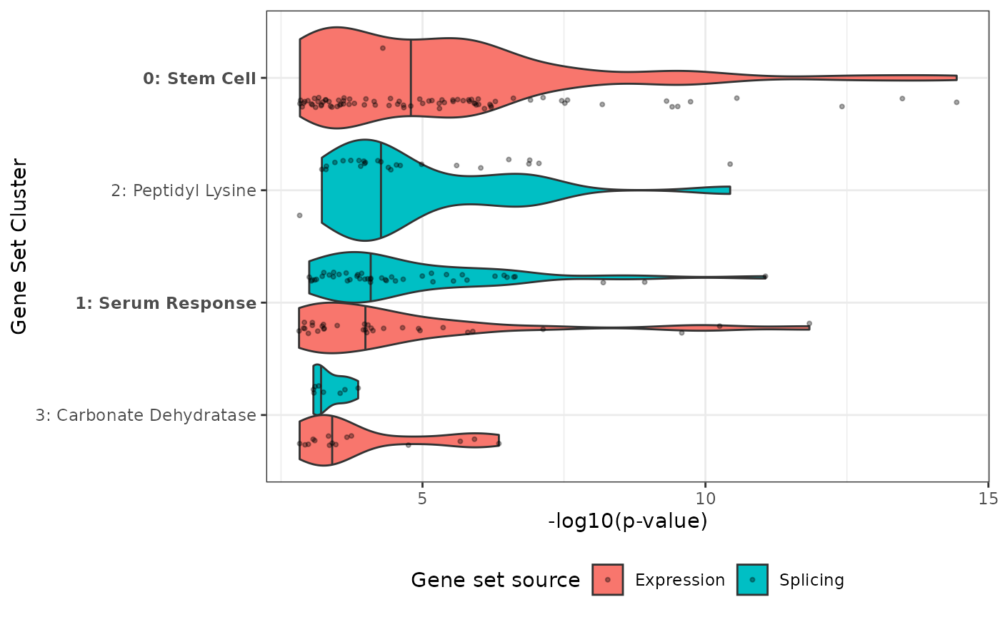
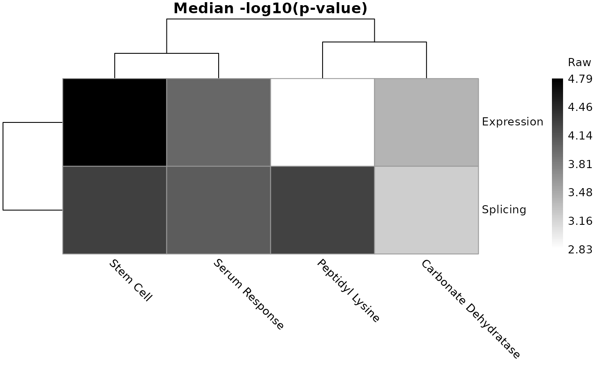
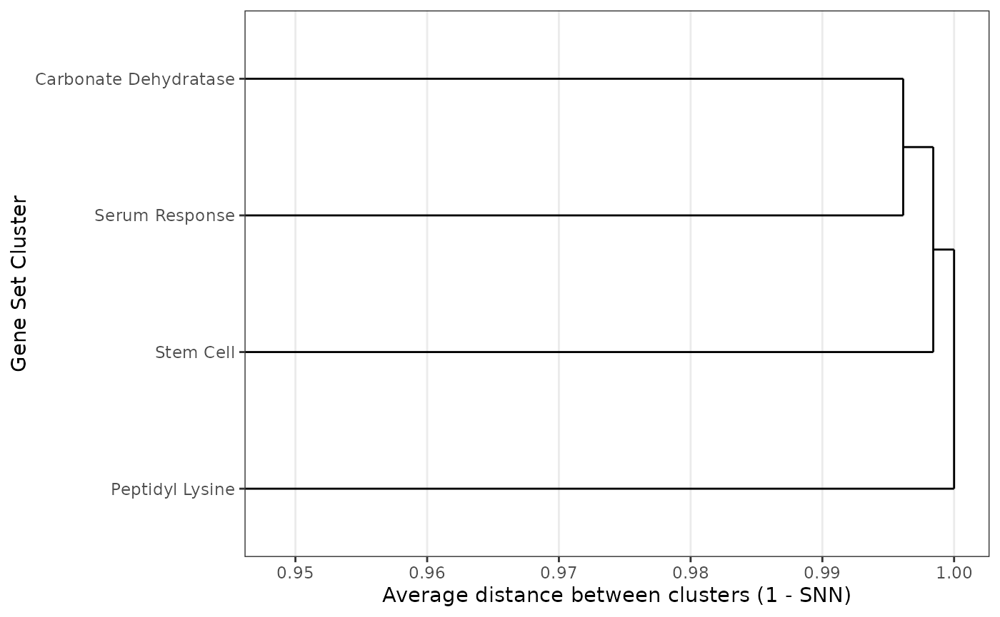
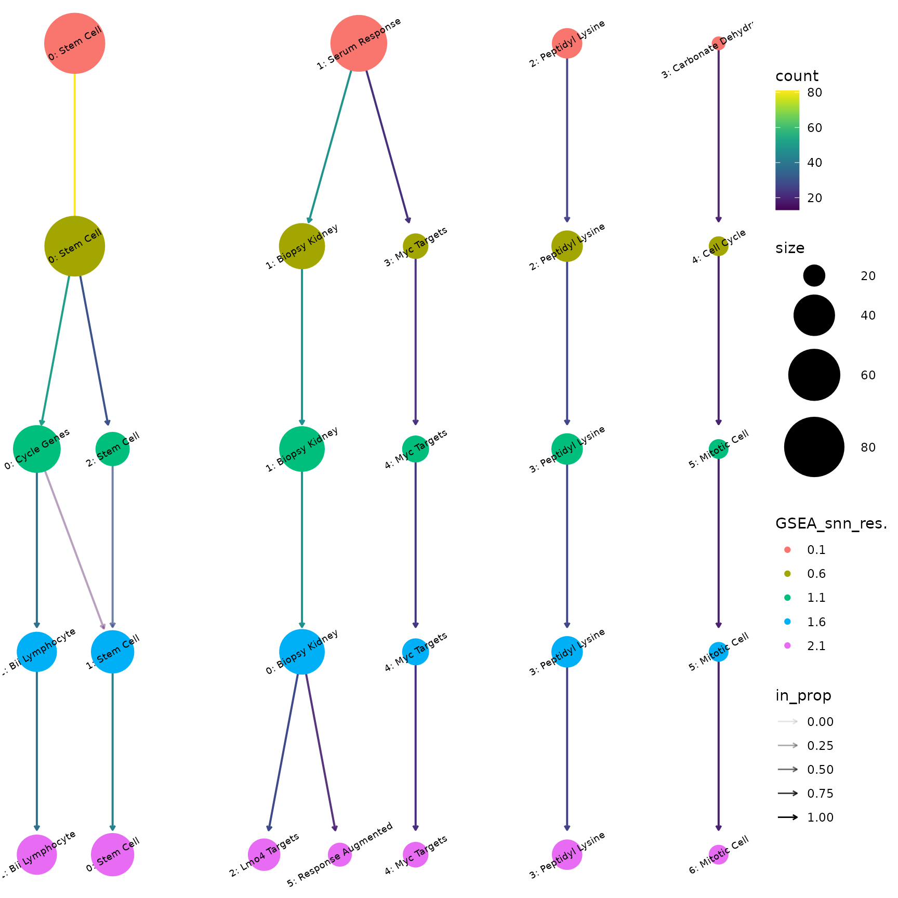

Vignette for geneSetSimplifyR
Ella Hedeboe, Chiao-Yu Hsieh, and Kristoffer Vitting-Seerup
25 October, 2026
Source:vignettes/geneSetSimplifyR.Rmd
geneSetSimplifyR.RmdBackground and Rationale
Gene-set enrichment analysis (GSEA) is one of the most useful types of bioinformatic analysis since it summarizes long lists of genes (e.g. TP53, CD1) into more high-level biological concepts (e.g. “cell cycle”, “DNA repair”). While GSEA is potentially extremely powerful for profiling the high-level biological changes in a system, this is often hampered by very long lists of significant gene sets. This point is demonstrated by our recent article where we re-analyze 100 RNA-seq data sets and show the average dataset had 1700+ gene sets significantly enriched among differentially expressed genes.
It is naturally not possible to manually analyze such long lists, so in practice scientists often just show the most significant/enriched gene-sets or cherry-pick gene-sets based on prior biological hypothesis. Neither is naturally desirable (or good scientific practice?), hence approaches to analyzing such long lists of gene sets are needed.
That is why we created geneSetSimplifyR.
geneSetSimplifyR solves this problem by:
- Grouping gene-sets into a small number of highly redundant/overlapping clusters through unsupervised clustering
- Intelligently assigning labels to each cluster making it easy to figure out the core biology behind a cluster
- Providing a host of intuitive plots enabling both visualization and exploration of these clusters
geneSetSimplifyR works on the output from any
gene-set enrichment analysis tool but works especially well with fgsea.
Installation
geneSetSimplifyR can be installed from GitHub by copy
pasting this command into R. BiocManager installs the
dependencies from both CRAN and Bioconductor:
if (!requireNamespace("BiocManager", quietly = TRUE)) {
install.packages("BiocManager")
}
BiocManager::install("remotes") # needed to install from GitHub
BiocManager::install("IsoformAnalysisGroup/geneSetSimplifyR")This vignette is also available online at https://isoformanalysisgroup.github.io/geneSetSimplifyR/.
geneSetSimplifyR workflow
Overview
geneSetSimplifyR works on the output from any
gene-set enrichment analysis tool but works especially well with fgsea.
The input to geneSetSimplifyR is simply:
- A list of the gene-sets that should be clustered
- Optionally(!) metadata about the enrichment analysis that can be used for downstream visualization.
Specifically geneSetSimplifyR supports visualization
of
- enrichment scores for each gene-set (e.g. NES, odds ratio, etc)
- p-values for each gene-set (shown as -log10 p-values)
- multi-conditional data (joint comparison of several analyses each finding gene-sets of interest).
The geneSetSimplifyR workflow has three parts:
- Cluster and label gene-sets
- Visual exploration of the gene-set clustering
- Exploring and verifying clusters
Each part is elaborated on in the sections below.
Cluster and label gene-sets
We start by loading the geneSetSimplifyR library and its
associated example data:
library(geneSetSimplifyR)
library(ggplot2) # for modifying the plots
data("exampleGeneSets")
data("exampleEnrichment")
### Or load your own gmt file (you can also pass the file path directly
### as 'geneSetsList' to geneSetSimplifyR()):
# exampleGeneSets <- fgsea::gmtPathways(path_to_your_gmt_file)Let’s explore the data to see what it should look like
### The gene sets are a list
class(exampleGeneSets)
#> [1] "list"
### Where each entry is a gene set and its annotated genes
str(head(exampleGeneSets,2))
#> List of 2
#> $ GOBERT_OLIGODENDROCYTE_DIFFERENTIATION_UP: chr [1:498] "AAAS" "ABCB1" "ADAM23" "AEN" ...
#> $ FISCHER_DREAM_TARGETS : chr [1:819] "AAAS" "ABCB10" "ABCE1" "ABHD10" ...
head(exampleEnrichment, 2)
#> # A tibble: 2 × 5
#> source pathway enrichment_score pval padj
#> <chr> <chr> <dbl> <dbl> <dbl>
#> 1 Expression GRADE_COLON_AND_RECTAL_CANCER_UP 1.22 0.0000110 0.00129
#> 2 Splicing BENPORATH_NANOG_TARGETS 1.12 0.0000931 0.00904The enrichment_score can be used for visualization
downstream and the source column can be used to compare the
results of multiple analyses. A pval column with the p-value of
each gene set can also be added; it is then shown as -log10(p-value) by
the plots that summarize the clusters. Here the enrichment scores,
p-values and adjusted p-values come from fgsea. In this
case the example data is a subset of the colorectal data analyzed in Vitting-Seerup
& Sandelin (2017) where gene-set enrichment was done both for
differentially expressed genes (“Expression”) and differentially spliced
genes (“Splicing”).
With the data read we are now ready to use
geneSetSimplifyR. The main functionalities are:
- Cluster gene-sets based on the overlap in genes annotated to the gene-sets
- Intelligently label the clusters from the most informative words in the gene-set name
All functionality is wrapped into the geneSetSimplifyR() function:
exampleGsList <- geneSetSimplifyR(
geneSetsList = exampleGeneSets,
geneSetsDF = exampleEnrichment,
resolution = c(0.1, 0.6, 1.1, 1.6), # for quick run - delete when running on real data
verbose = FALSE,
removeFirstWord = TRUE # Set as TRUE because the gene sets we’re using have the authors’ names as their first word.
)
exampleGsList
#> A gsList object with 197 gene sets from 2 source(s) clustered into 4 labeled clusters.
#> Metadata:
#> algorithm: louvain
#> k (KNN): 14
#> LSI elbow cutoff: 11
#> selected resolution: 0.1
#> n pathways: 197Please note that:
- While the visualizations in
geneSetSimplifyRhave a deep integration with the enrichment scores and source annotation, these are neither needed nor used for the clustering/labeling. Therefore the geneSetsDF argument is optional. - The resolution argument is the hyper-parameter that controls the “level” of clustering, with higher values typically resulting in more (smaller) clusters.
- Here we only use a few resolution values for a quick run on the example data. In practice we recommend using a wider range of resolutions because:
- They can be utilized and explored downstream
-
geneSetSimplifyRpicks a default resolution (the one with the highest silhouette score) from the ones tested
The default resolution picked from the silhouette score can be inspected with:
extractResolution(exampleGsList)
#> [1] 0.1Note that the silhouette-based default is only a starting point — we
strongly encourage users to inspect the clustering at multiple
resolutions (e.g. with plotClustree(), see below) and pick
the resolution that best fits their data and biological question.
Visual exploration of the gene-set clustering
Now with the clustering and labeling done we are ready to explore the data visually. If you did not run the code above to generate the example dataset you can load the example gsList as follows:
data("exampleGsList")
exampleGsList
#> A gsList object with 197 gene sets from 2 source(s) clustered into 4 labeled clusters.
#> Metadata:
#> algorithm: louvain
#> k (KNN): 14
#> LSI elbow cutoff: 11
#> selected resolution: 0.1
#> n pathways: 197To get an overview of the clusters the simplest visualization is a bar chart.
plotBarchart(
geneSetsList = exampleGsList,
highlightClusterNo = c(0,1)
)
The bar chart shows the number of gene sets in each cluster, per source. With multi-source data this immediately highlights clusters dominated by one source versus those shared between sources, which can suggest biology specific to one source versus shared programs. Here, for example, the “Stem Cell” cluster consists almost only of gene sets enriched among differentially expressed genes, while the “Peptidyl Lysine” cluster consists almost only of gene sets enriched among differentially spliced genes.
Also note that the highlightClusterNo argument is
available for most plotting functions, making it easy to visually
communicate which clusters you think are most interesting (shown in
bold).
We can also visualize the gene-set clusters in a UMAP plot:
plotUMAP(
geneSetsList = exampleGsList,
highlightClusterNo = c(0,1),
removeClusterId = TRUE,
pointAlpha = 1 # because there are relatively few gene-sets here
)
Which automatically plots the source as the shape. The UMAP plot
function has many arguments enabling fine-tuning of the plot, and
interactive = TRUE gives a plot where hovering over a point
shows its gene set. Here we just want to highlight the use of
removeClusterId. While the cluster numbers are useful for
quick referral to clusters (important later), it is often desirable to
remove them. Hence the removeClusterId argument
(implemented in most plot functions) removes the cluster number
(e.g. the “1:” prefix in “1: Serum Response”).
We already mentioned how we see differences in cluster composition. This can naturally also be directly visualized. Gene sets found in both sources are counted once, as “Both”:
plotProportions(
geneSetsList = exampleGsList,
highlightClusterNo = c(0,1),
removeClusterId = TRUE
)
We can also utilize the p-values and enrichment scores we have for each gene set. The simplest visualization is a lollipop plot of each cluster’s median -log10(p-value):
plotEnrichments(
geneSetsList = exampleGsList,
highlightClusterNo = c(0,1),
removeClusterId = TRUE
)
Which value is plotted is controlled by plotFrom, and
how the gene sets of a cluster are summarized by
summaryStat (‘median’, ‘max’ or ‘mean’). By default the
-log10 p-values are plotted when available, else the enrichment scores.
Any numeric column you supplied in geneSetsDF can be used,
here the mean enrichment score:
plotEnrichments(
geneSetsList = exampleGsList,
plotFrom = 'enrichment_score',
summaryStat = 'mean',
removeClusterId = TRUE
)
But we can also visualize the values of all gene sets (by default the -log10 p-values) in a violin plot:
plotViolin(
geneSetsList = exampleGsList,
highlightClusterNo = c(0,1),
removeClusterId = FALSE
)
These plots are useful for showing differences in regulation (one cluster being up-regulated while another is down-regulated).
With many sources (e.g. many conditions or time points), a heatmap
with one row per source gives a compact overview. Cells of clusters
without any gene set from a source are gray. With three or more sources,
each cluster is z-scored across the sources by default (see the
scaleCols argument):
plotHeatmap(
geneSetsList = exampleGsList,
removeClusterId = TRUE
)
We can investigate how the clusters relate to one another using the per-cluster average dendrogram:
plotDendrogram(
geneSetsList = exampleGsList,
removeClusterId = TRUE
)
The dendrogram complements the UMAP: distances between clusters in a UMAP are not always meaningful, while the dendrogram is computed directly from the gene sets the clusters share. The distances are often all close to 1, because few gene sets of different clusters are neighbors, so the axis is zoomed in on the range of the merges.
Exploring and verifying clusters
The most important thing to get right is the clustering “level”
controlled by the resolution argument (as shown above in
the Cluster and label
gene-sets section). geneSetSimplifyR picks a sensible
default automatically, but we always recommend visualizing how different
cluster resolutions affect the clusters via the clustree
R package here wrapped in the plotClustree() function:
plotClustree(
exampleGsList,
resolutionsToPlot = c(0.1, 0.6, 1.1, 1.6, 2.1) # a subset keeps the tree readable
)
This is a very powerful way to see how the gene-sets are distributed into different clusters and for helping with verifying the clustering “level”, as determined by the resolution, is correct.
This can naturally be followed up by e.g. a UMAP at a different resolution — here resolution 0.6:
plotUMAP(
geneSetsList = exampleGsList,
resolution = 0.6,
pointAlpha = 1
)
Please note the resolution parameter is also implemented
for most plotting functions and for extractTable(). When it
is left at NULL, the active resolution is used:
the optimal one found by clusterGeneSets(), or the one you
last chose with updateResolution() or
updateClusterLabels(resolution = ...).
Let’s try to update the default resolution:
exampleGsList <- updateResolution(
geneSetsList = exampleGsList,
resolution = 0.6
)
exampleGsList
#> A gsList object with 197 gene sets from 2 source(s) clustered into 5 labeled clusters.
#> Metadata:
#> algorithm: louvain
#> k (KNN): 14
#> LSI elbow cutoff: 11
#> selected resolution: 0.6
#> n pathways: 197Once we have verified the cluster resolution is suitable (for your
analysis), we can move on to verifying the cluster labels. While we
spent a lot of time optimizing the approach
geneSetSimplifyR uses to extract informative labels for
each cluster, it is not a perfect process. Therefore we have built
functionality to both explore and change cluster labels.
plotClusterLabels(
geneSetsList = exampleGsList,
clusterNumber = 1,
maxChar = 35 # shorten gene-set names to fit in vignette
) +
theme_bw(base_size = 8) # make font smaller to fit in vignette
From which a LOT of summary info can be seen for this particular cluster:
- The label TF-IDF meaning the two-words that are most enriched in this cluster compared to other clusters (bottom left)
- The gene-sets most central in the shared nearest neighbor (SNN) graph of the cluster (top right)
- The weighted TF IDF - that is the TF-IDF score of each label combined with the centrality of the gene sets it comes from (both scaled to 0-1 and added). The top label defines the cluster label (top left).
- The most frequent words in the gene-set names (top mid)
- The most frequent genes in the gene-sets (bottom mid)
- The largest gene-sets in the cluster (bottom right)
We recommend that you always inspect the output from plotClusterLabels() for ALL your clusters to ensure the labeling is appropriate.
If you think the auto-generated cluster labels could be more precise, you can manually override them. For example, cluster 1 contains the serum response gene sets of Schlosser et al. If you determine that this cluster is better described as “Serum Response” after checking the gene-set information, the gsList can be updated accordingly:
exampleGsList <- updateClusterLabels(
geneSetsList = exampleGsList,
clusterNumber = 1,
newClusterName = 'Serum Response'
)
plotUMAP(
geneSetsList = exampleGsList,
pointAlpha = 1
)
To verify the clustering you can naturally also look at all the gene-sets annotated to a cluster:
gsTable <- extractTable(
geneSetsList = exampleGsList,
summarize = FALSE
)
head(gsTable)
#> source pathway enrichment_score
#> 1 Expression GOBERT_OLIGODENDROCYTE_DIFFERENTIATION_UP 1.294445
#> 2 Expression FISCHER_DREAM_TARGETS 1.223318
#> 3 Expression MEBARKI_HCC_PROGENITOR_FZD8CRD_UP 1.282581
#> 4 Expression VECCHI_GASTRIC_CANCER_EARLY_UP 1.283857
#> 5 Expression SOTIRIOU_BREAST_CANCER_GRADE_1_VS_3_UP 1.420683
#> 6 Expression KOBAYASHI_EGFR_SIGNALING_24HR_DN 1.340100
#> pval padj nlog10pval cluster initial_cluster_label
#> 1 3.637638e-15 2.210229e-11 14.439181 Stem Cell Stem Cell
#> 2 3.314153e-14 1.006840e-10 13.479627 Stem Cell Stem Cell
#> 3 3.863003e-13 9.388643e-10 12.413075 Stem Cell Stem Cell
#> 4 2.789000e-11 4.236490e-08 10.554552 Stem Cell Stem Cell
#> 5 1.832008e-10 2.023870e-07 9.737073 Stem Cell Stem Cell
#> 6 3.091404e-10 2.889749e-07 9.509844 Stem Cell Stem CellThe initial_cluster_label column keeps the automatically
generated label of renamed clusters. We strongly recommend ALWAYS
including this table in the supplementary material of an article, as it
is essential for both transparency and reproducibility.
For reporting purposes this table can also be summarized:
gsSummary <- extractTable(
geneSetsList = exampleGsList,
summarize = TRUE
)
head(gsSummary)
#> source cluster enrichment mean enrichment sd genesets
#> 1 Expression Stem Cell 1.27 0.07 80
#> 2 Splicing Stem Cell 1.14 NA 1
#> 3 Expression Serum Response 1.19 0.09 12
#> 4 Splicing Serum Response 1.19 0.05 38
#> 5 Expression Peptidyl Lysine 1.25 NA 1
#> 6 Splicing Peptidyl Lysine 1.23 0.06 26Plot modifications
All visualization functions return a ggplot2 object, except
plotHeatmap() (a pheatmap object) and
plotUMAP(interactive = TRUE) (a plotly object):
data("exampleGsList")
p1 <- plotBarchart(
geneSetsList = exampleGsList,
highlightClusterNo = c(0,1)
)
inherits(p1, "ggplot")
#> [1] TRUE
p1
This also means all plots can easily be modified using standard ggplot2 operations:
p1 +
ggtitle('New plot title')
Such ggplot2 operations are really easy to google since ggplot2 has millions of users. So if you want to modify any plot in some way, just google that in conjunction with ggplot2 and you will find your answer (e.g. “ggplot2 change fill color”).
p1 +
scale_fill_manual(values = c('black','green'))
Convenience parsers for common GSEA tools
geneSetSimplifyR ships small helpers that convert the
output of popular enrichment-analysis tools into the
geneSetsList + geneSetsDF pair
geneSetSimplifyR() expects, so you don’t have to reshape
the data by hand:
-
parsePairedGSEA()— parses apairedGSEA::paired_ora()result. Each of the three blocks (expression,splicing,paired) is filtered by its own padj cutoff (cutoff_exp,cutoff_splicing,cutoff_paired) and contributes its surviving pathways as a separatesource. -
parseFgsea()— parses a singlefgsea::fgsea()(GSEA) orfgsea::fora()(ORA) result; filters by apadjcutoff and labels rows with a user-suppliedsourcestring. To combine several analyses into one multi-source clustering, run it once per analysis (with a distinctsource),rbind()the resultinggeneSetsDFs and combine thegeneSetsLists (e.g.c(a, b)followed by removing duplicated names). -
getGeneSets()— fetches MSigDB gene sets (via msigdbr) by collection / sub-collection or by a vector of pathway names. Handy for building ageneSetsListfrom scratch or for inspecting the members of specific pathways after clustering.
The two parsers return a list with two elements,
geneSetsList and geneSetsDF, ready to pass
straight into geneSetSimplifyR().
getGeneSets() returns a named list of gene sets that can be
used as geneSetsList:
# pairedGSEA example
parsed <- parsePairedGSEA(
oraResult = oraResult, # output from pairedGSEA::paired_ora()
geneSets = mSigDB, # mSigDB gene sets
cutoff_exp = 0.05,
cutoff_splicing = 0.05,
cutoff_paired = 0.05
)
gss <- geneSetSimplifyR(
geneSetsList = parsed$geneSetsList,
geneSetsDF = parsed$geneSetsDF
)
# fgsea example is shown in the next section.See ?parsePairedGSEA, ?parseFgsea, and
?getGeneSets for the full argument list.
How to do gene-set enrichment analysis/overrepresentation analysis
Let’s look at how to produce the input for
geneSetSimplifyR via the fgsea package and its
example data:
And here are the genes of interest (e.g. significant genes) from the
fgsea package:
sigGenes <- tail(names(exampleRanks), 750)
head(sigGenes)
#> [1] "105352" "18476" "380912" "20788" "57875" "56175"Then, we can run a simple over-representation analysis (ORA) or gene
set enrichment analysis (GSEA) using the fgsea package as
follows:
# ORA example
oraRes <- fora(
pathways = examplePathways,
genes = sigGenes,
universe = names(exampleRanks)
)
head(oraRes[order(padj), ])
#> pathway pval padj
#> <char> <num> <num>
#> 1: 5990980_Cell_Cycle 2.692788e-26 3.823760e-23
#> 2: 5990979_Cell_Cycle,_Mitotic 2.327765e-25 1.652713e-22
#> 3: 5991851_Mitotic_Prometaphase 3.588483e-21 1.698549e-18
#> 4: 5992217_Resolution_of_Sister_Chromatid_Cohesion 1.316533e-18 4.673693e-16
#> 5: 5991454_M_Phase 1.103607e-14 3.134243e-12
#> 6: 5991757_RHO_GTPases_Activate_Formins 6.216227e-14 1.471174e-11
#> foldEnrichment overlap size overlapGenes
#> <num> <int> <int> <list>
#> 1: 3.642276 84 369 11799,12189,12236,12442,12448,12531,...[84]
#> 2: 3.835962 76 317 11799,12236,12442,12448,12531,12534,...[76]
#> 3: 6.829268 35 82 11799,12236,12442,12534,12615,14211,...[35]
#> 4: 6.702703 31 74 11799,12236,12442,12534,12615,16319,...[31]
#> 5: 3.884393 42 173 11799,12236,12442,12534,12615,14211,...[42]
#> 6: 5.538462 27 78 11799,12236,12615,16319,18817,20877,...[27]
# fgsea example
fgseaRes <- fgsea(pathways = examplePathways,
stats = exampleRanks)
head(fgseaRes[order(padj), ])
#> pathway pval padj
#> <char> <num> <num>
#> 1: 5990980_Cell_Cycle 3.256130e-27 4.623704e-24
#> 2: 5990979_Cell_Cycle,_Mitotic 1.426222e-25 1.012617e-22
#> 3: 5991851_Mitotic_Prometaphase 5.533885e-18 2.619372e-15
#> 4: 5992217_Resolution_of_Sister_Chromatid_Cohesion 1.009684e-17 3.584380e-15
#> 5: 5991454_M_Phase 1.059322e-14 3.008474e-12
#> 6: 5991599_Separation_of_Sister_Chromatids 1.701655e-14 4.027251e-12
#> log2err ES NES size
#> <num> <num> <num> <int>
#> 1: 1.3499257 0.5388497 2.680665 369
#> 2: 1.3110148 0.5594755 2.740362 317
#> 3: 1.0959293 0.7253270 2.925960 82
#> 4: 1.0864405 0.7347987 2.935897 74
#> 5: 0.9865463 0.5576247 2.536998 173
#> 6: 0.9759947 0.6164599 2.650487 116
#> leadingEdge
#> <list>
#> 1: 66336,66977,12442,107995,66442,19361,...[155]
#> 2: 66336,66977,12442,107995,66442,12571,...[141]
#> 3: 66336,66977,12442,107995,66442,52276,...[44]
#> 4: 66336,66977,12442,107995,66442,52276,...[40]
#> 5: 66336,66977,12442,107995,66442,52276,...[67]
#> 6: 66336,66977,107995,66442,52276,67629,...[50]Both ORA and GSEA results from fgsea can be used as input to our package in the same way. Below, we use the ORA results to demonstrate this workflow.
parsed <- parseFgsea(oraRes, examplePathways, cutoff=0.05)
oraGsList <- geneSetSimplifyR(
geneSetsList = parsed$geneSetsList,
geneSetsDF = parsed$geneSetsDF,
verbose = FALSE,
removeFirstWord = TRUE # the names start with an id, e.g. 5990980_Cell_Cycle
)
oraGsList
#> A gsList object with 59 gene sets from 1 source(s) clustered into 10 labeled clusters.
#> Metadata:
#> algorithm: louvain
#> k (KNN): 8
#> LSI elbow cutoff: 10
#> selected resolution: 4.1
#> n pathways: 59
plotEnrichments(oraGsList) # uses the -log10 p-values kept by parseFgsea()
Session info
sessionInfo()
#> R version 4.6.1 (2026-06-24)
#> Platform: x86_64-pc-linux-gnu
#> Running under: Ubuntu 24.04.5 LTS
#>
#> Matrix products: default
#> BLAS: /usr/lib/x86_64-linux-gnu/openblas-pthread/libblas.so.3
#> LAPACK: /usr/lib/x86_64-linux-gnu/openblas-pthread/libopenblasp-r0.3.26.so; LAPACK version 3.12.0
#>
#> locale:
#> [1] LC_CTYPE=C.UTF-8 LC_NUMERIC=C LC_TIME=C.UTF-8
#> [4] LC_COLLATE=C.UTF-8 LC_MONETARY=C.UTF-8 LC_MESSAGES=C.UTF-8
#> [7] LC_PAPER=C.UTF-8 LC_NAME=C LC_ADDRESS=C
#> [10] LC_TELEPHONE=C LC_MEASUREMENT=C.UTF-8 LC_IDENTIFICATION=C
#>
#> time zone: UTC
#> tzcode source: system (glibc)
#>
#> attached base packages:
#> [1] stats graphics grDevices utils datasets methods base
#>
#> other attached packages:
#> [1] fgsea_1.38.0 ggplot2_4.0.3 geneSetSimplifyR_0.99.0
#> [4] BiocStyle_2.40.0
#>
#> loaded via a namespace (and not attached):
#> [1] RColorBrewer_1.1-3 jsonlite_2.0.0 magrittr_2.0.5
#> [4] spatstat.utils_3.2-5 farver_2.1.2 rmarkdown_2.32
#> [7] fs_2.1.0 ragg_1.5.2 vctrs_0.7.3
#> [10] ROCR_1.0-12 memoise_2.0.1 spatstat.explore_3.8-3
#> [13] htmltools_0.5.9 janeaustenr_1.0.0 sass_0.4.10
#> [16] sctransform_0.4.3 parallelly_1.48.0 KernSmooth_2.23-26
#> [19] bslib_0.12.0 htmlwidgets_1.6.4 tokenizers_0.3.0
#> [22] desc_1.4.3 ica_1.0-3 plyr_1.8.9
#> [25] plotly_4.12.1 zoo_1.9-1 cachem_1.1.0
#> [28] igraph_2.3.4 mime_0.13 lifecycle_1.0.5
#> [31] pkgconfig_2.0.3 Matrix_1.7-5 R6_2.6.1
#> [34] fastmap_1.2.0 fitdistrplus_1.2-6 future_1.80.0
#> [37] shiny_1.14.0 digest_0.6.39 tidytext_0.4.3
#> [40] patchwork_1.3.2 Seurat_5.6.0 tensor_1.5.1
#> [43] RSpectra_0.16-2 irlba_2.4.1 textshaping_1.0.5
#> [46] SnowballC_0.7.1 labeling_0.4.3 progressr_1.1.0
#> [49] spatstat.sparse_3.2-0 httr_1.4.9 polyclip_1.10-7
#> [52] abind_1.4-8 compiler_4.6.1 withr_3.0.3
#> [55] backports_1.5.1 S7_0.2.2 BiocParallel_1.46.0
#> [58] viridis_0.6.5 fastDummies_1.7.6 ggforce_0.5.0
#> [61] MASS_7.3-65 tools_4.6.1 lmtest_0.9-40
#> [64] otel_0.2.0 httpuv_1.6.17 future.apply_1.21.0
#> [67] goftest_1.2-3 glue_1.8.1 nlme_3.1-169
#> [70] promises_1.5.0 grid_4.6.1 checkmate_2.3.4
#> [73] Rtsne_0.17 cluster_2.1.8.2 reshape2_1.4.5
#> [76] generics_0.1.4 clustree_0.5.1 gtable_0.3.6
#> [79] spatstat.data_3.1-9 tidyr_1.3.2 data.table_1.18.6.1
#> [82] tidygraph_1.3.1 sp_2.2-4 utf8_1.2.6
#> [85] spatstat.geom_3.8-3 RcppAnnoy_0.0.23 ggrepel_0.9.8
#> [88] RANN_2.6.3 pillar_1.11.1 stringr_1.6.0
#> [91] spam_2.11-4 RcppHNSW_0.7.0 later_1.4.8
#> [94] splines_4.6.1 tweenr_2.0.3 dplyr_1.2.1
#> [97] lattice_0.22-9 survival_3.8-6 deldir_2.0-4
#> [100] tidyselect_1.2.1 miniUI_0.1.2 pbapply_1.7-5
#> [103] knitr_1.52 gridExtra_2.3.1 bookdown_0.48
#> [106] scattermore_1.2 xfun_0.62 graphlayouts_1.2.5
#> [109] matrixStats_1.5.0 pheatmap_1.0.13 stringi_1.8.9
#> [112] yaml_2.3.12 evaluate_1.0.5 codetools_0.2-20
#> [115] ggraph_2.2.2 tibble_3.3.1 BiocManager_1.30.27
#> [118] cli_3.6.6 uwot_0.2.5 xtable_1.8-8
#> [121] reticulate_1.47.0 systemfonts_1.3.2 jquerylib_0.1.4
#> [124] Rcpp_1.1.2 globals_0.20.0 spatstat.random_3.5-2
#> [127] png_0.1-9 spatstat.univar_3.2-0 parallel_4.6.1
#> [130] pkgdown_2.2.1 dotCall64_1.2 listenv_1.1.0
#> [133] viridisLite_0.4.3 scales_1.4.0 ggridges_0.5.7
#> [136] SeuratObject_5.4.0 purrr_1.2.2 rlang_1.3.0
#> [139] fastmatch_1.1-8 cowplot_1.2.0